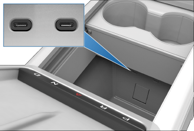
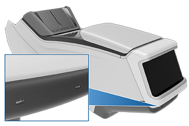
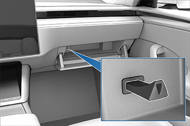

Software version: 2024.20
North America
Software version: 2024.20
North America
For the latest and greatest information that is customized to your vehicle, view the Owner’s Manual on your vehicle’s touchscreen by touching the app launcher and then selecting the Manual app. The information is specific to your vehicle depending on the features you purchased, vehicle configuration, market region, and software version. In contrast, owner information that is provided by Tesla elsewhere is updated as necessary and may not contain information unique to your vehicle.
Information about new features is displayed on the touchscreen after a software update, and can be viewed at any time by choosing the Release Notes tab in the Manual app, or by touching Controls > Software > Release Notes. If the content in the Owner's Manual on how to use your vehicle conflicts with information in the Release Notes, the Release Notes take precedence.
The illustrations provided in this document are for demonstration purposes only. Depending on vehicle options, software version and market region, the information displayed on the touchscreen in your vehicle may appear slightly different.
All specifications and descriptions contained in this document are verified to be accurate at the time of printing. However, because continuous improvement is a goal at Tesla, we reserve the right to make product modifications at any time. To communicate any inaccuracies or omissions in this document, please send an email to: ownersmanualfeedback@tesla.com.
You can find safety information in your Model S Owner's Manual on the touchscreen.
For detailed information about your Model S, go to the Tesla website for your region, log on to your Tesla account, or sign up to get an account.
If you have any questions or concerns about your Model S, call 1-877-79TESLA (1-877-798-3752).

Note
Depending on market region, vehicle configuration, and options purchased, your vehicle may look slightly different than described.
Note
Illustrations are provided to improve conceptual understanding only. Depending on vehicle options purchased and market region, the design may differ but the function is the same.
In addition to the instrument panel, Model S is equipped with a front and rear touchscreen.
Note
Throughout this Owner's Manual, the front touchscreen is referred to as the "touchscreen" whereas the rear touchscreen is referred to as the "rear touchscreen".
Warning
Always pay attention to road and traffic conditions when driving. To minimize driver distraction and ensure the safety of vehicle occupants as well as other road users, avoid using the touchscreen to adjust settings while the vehicle is in motion.
Use the touchscreen to control many features that, in traditional cars, are controlled using physical buttons (for example, adjusting the cabin heating and air conditioning, headlights, etc.). You also use the touchscreen to control media, navigate, use entertainment features, and customize Model S to suit your preferences. For hands-free access to common touchscreen controls, use voice commands (see Voice Commands).
If the touchscreen is unresponsive or demonstrates unusual behavior, you can restart it (see Restarting the Touchscreen).
Caution
Do not apply a screen protector on the touchscreen. Doing so can result in unintended inputs to the touchscreen (phantom inputs), delayed response or unresponsiveness to touches, electrostatic discharge which can damage the touchscreen, etc. Any damage caused by installing a screen protector is not covered by the warranty.
Note
Note
You cannot completely close Media Player. When you drag Media Player down, it displays Mini-Player which allows you see what's playing, pause/play, and skip reverse/forward.
In addition to storage compartments and cup holders (see Interior Storage), the Model S interior supports various electronics such as USB ports, wireless phone chargers, and a 12V power socket.
The USB ports can output power up to approximately 27W (which may vary depending on vehicle manufacture date).
See USB Drive Requirements for Recording Videos for information about formatting USB flash drives.
To access the front USB ports, open the front compartment of the center console. The front USB ports are located on the rear wall of the compartment:
Rear USB ports are located below the rear touchscreen:
Glovebox USB port:
